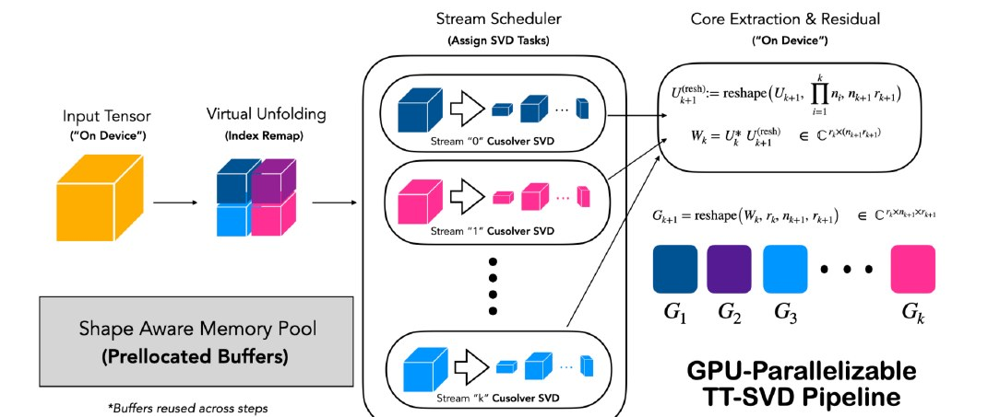

Fast and Memory-Efficient GPU Tensor Train Decomposition via Parallel TT-SVD
The paper in one paragraph
We present a lightweight, fully GPU-parallel implementation of Tensor Train SVD (TT-SVD), a way to compress huge multi-dimensional arrays into a chain of small ones. Every stage (unfolding, truncated SVD, core extraction) runs on the GPU. CUDA streams run many SVDs at once and a shape-aware memory manager removes costly allocations and data transfers. The result is up to 50× faster and 2× lower memory use, with no loss in reconstruction accuracy.
Research overview & problem statement
The problem
High-dimensional tensors appear in computational physics, quantum chemistry, signal processing and deep learning. Their size grows exponentially with the number of dimensions, a problem known as the “curse of dimensionality”, so storing and computing with them directly quickly becomes infeasible. Tensor Train (TT) decomposition is a well-known fix: it keeps the storage growing linearly with the number of dimensions and has been used to compress neural network weights and speed up inference.
The gap
Existing libraries such as T3F and TensorLy support TT decomposition, but they are limited by CPU-bound computation or only partial GPU acceleration. Data keeps moving between CPU and GPU, and memory is allocated again and again.
Goals
- Run the whole TT-SVD pipeline on the GPU.
- Cut runtime and peak memory against existing libraries.
- Keep the same mathematical result: no loss in reconstruction accuracy.
Three key innovations
- Concurrent SVDs: independent SVDs run across TT layers on CUDA streams.
- Memory reuse: shape-aware buffer pooling reuses GPU memory between steps.
- Efficient kernels: kernel-level tensor unfolding and contraction without explicit large copies.
Tools & technologies used
GPU programming
CUDA, CUDA streams, cuBLAS and cuSOLVER (Jacobi / iterative solver)
Hardware
NVIDIA A100 80GB GPU, 32-core Intel Xeon CPU
Baselines
Tensorly, t3f, and a naive GPU TT-SVD written in PyTorch / CuPy
Measurement
CUDA profiler for peak memory, total decomposition time, relative reconstruction error (RRE)
Method: how the pipeline works

Step by step
Normally each step of TT-SVD reshapes (“unfolds”) the tensor into a big matrix, which copies a lot of data. Here the unfolding is an index remap, a view over the tensor already on the GPU. Blockwise kernels and index arithmetic feed matrix views straight to cuBLAS and cuSOLVER, so the full unfolded matrix is never built.
The SVDs are sent to several CUDA streams, each with its own cuSOLVER handle. Independent SVD work then overlaps and keeps the GPU busy. The scheduler gives more resources to the central unfoldings (near k ≈ d/2), which are usually the largest. The Jacobi / iterative solver is used for its numerical robustness on small and medium problems.
Device buffers are allocated once and reused, keyed by unfolding shape and data type. The residual is formed in place, so repeated allocations disappear and peak memory goes down.
For each step, the truncated SVD gives a factor U. The next unfolding is reshaped, the residual W = U* · reshape(U) is computed with a small matrix multiply on the device, and the result is reshaped into TT core G. All of this stays on the GPU.
When the singular values are poorly separated, the method can use optional TSQR / orthonormalisation, or run the SVD in higher precision, to limit numerical drift.
Key results & insights
Experimental setup
Compared against Tensorly, t3f and a naive GPU implementation on an NVIDIA A100 80GB GPU with a 32-core Intel Xeon CPU. Tests used synthetic tensors of shape [100,100,100], [64,64,64,64] and [32⁶], and a real-world tensor from CIFAR-10 ([32,32,3,10]), with truncation threshold ε = 10⁻⁴. Reported: total runtime, peak memory (CUDA profiler) and RRE = ‖X − X̂‖F / ‖X‖F.
Compare the methods
Pick a tensor shape. Bars use the values from Table 1. Time bars use a log scale, because Tensorly is so much slower.
Accuracy
Full results table
| Tensor shape | Time (ms) | Memory (MB) | RRE | |||||||||
|---|---|---|---|---|---|---|---|---|---|---|---|---|
| Ours | Tensorly | t3f | Naive | Ours | Tensorly | t3f | Naive | Ours | Tensorly | t3f | Naive | |
| [100, 100, 100] | 14.6 | 932.1 | 53.8 | 87.4 | 167.2 | 191.3 | 204.8 | 331.6 | 3.1e-5 | 3.1e-5 | 3.1e-5 | 3.1e-5 |
| [64, 64, 64, 64] | 28.9 | 1581.3 | 92.6 | 121.7 | 218.5 | 292.7 | 243.9 | 374.1 | 2.8e-5 | 2.8e-5 | 2.8e-5 | 2.8e-5 |
| [32⁶] | 63.4 | >3000 | 241.2 | 330.6 | 327.4 | — | 361.5 | 480.2 | 2.2e-5 | — | 2.2e-5 | 2.2e-5 |
What the table shows
- The method is the fastest and uses the least memory on every tested shape.
- For the largest tensor ([32⁶]), Tensorly did not finish in a reasonable time, while this method finished in under 65 ms with little memory overhead.
- Reconstruction error stays comparable to every other method, at about 10⁻⁵.
Ablation: memory gains
The smart memory pool reduces allocation time by 47–52% over naive dynamic allocation.
| Tensor shape | Dynamic alloc (ms) | Smart pool (ms) | Gain (%) |
|---|---|---|---|
| [100, 100, 100] | 8.2 | 4.3 | 47.6 |
| [64, 64, 64, 64] | 13.5 | 7.1 | 47.4 |
| [32⁶] | 26.3 | 12.5 | 52.5 |
Complexity
For a tensor with d dimensions of size n and TT-rank r, each SVD works on an (n·r) × (n·r) matrix and costs O(n²r³). With d − 1 such operations the total is O(d·n²·r³), far more tractable than the naive O(nᵈ).
Conclusion & impact
Conclusion
A lightweight but high-performance GPU implementation of TT-SVD that uses CUDA streams for parallel SVD execution, efficient mode-wise unfolding and memory pooling to cut allocation overhead. In practice it delivers up to 50× speedup and about half the memory footprint of standard libraries like Tensorly and t3f, with no loss in reconstruction accuracy.
Why it matters
- Large tensors are everywhere in modern machine learning and scientific computing, so efficiency is critical.
- Faster, smaller decompositions make large models and simulations cheaper to run.
- The authors hope it can serve as a practical drop-in solution for scalable tensor decomposition in real-world GPU workflows.
Keywords
Tensor Train Decomposition, TT-SVD, GPU Acceleration, CUDA, High-Dimensional Tensors, Parallel SVD, Memory Optimization, Tensor Compression
Cite this paper
Archana Pujahari, Sagar Prakash Barad, and Subhankar Mishra. 2025. Fast and Memory-Efficient GPU Tensor Train Decomposition via Parallel TT-SVD.